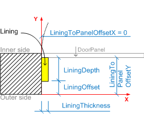
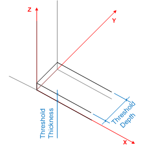

The door lining is the frame which enables the door leaf to be fixed in position. The door lining is used to hang the door leaf.
The parameters of the door lining (IfcDoorLiningProperties) define the geometrically relevant parameter of the lining.
 |
The lining is applied to the left, right and upper side of the opening reveal. The parameters are:
- LiningDepth, if omited, equal to wall thickness - this only takes effect if a value for
LiningThickness is given. If both parameters are not given, then there is no lining.
- LiningThickness
- LiningToPanelOffsetX
- LiningToPanelOffsetY
NOTE The parameters LiningToPanelOffsetX and LiningToPanelOffsetY are added in IFC4.
|
 |
The lining can only cover part of the opening reveal.
- LiningOffset : given if lining edge has an offset to the x axis of the local placement.
NOTE In addition to the LiningOffset, the local placement of the IfcDoor can already have an
offset to the wall edge and thereby shift the lining along the y axis. The actual position of the lining is calculated from the
origin of the local placement along the positive y axis with the distance given by LiningOffset.
|
 |
The lining may include a casing, which covers part of the wall faces around the opening. The
casing covers the left, right and upper side of the lining on both sides of the wall. The parameters are:
- CasingDepth
- CasingThickness
|
 |
The lining may include a threshold, which covers the bottom side of the opening. The parameters are:
- ThresholdDepth — if omited, equal to wall thickness - this only takes effect if a value for ThresholdThickness is
given. If both parameters are not given, then there is no threshold.
- ThresholdThickness
- ThresholdOffset (not shown in figure): given, if the threshold edge has an offset to the x axis of the local placement.
|
 |
The lining may have a transom which separates the door panel from a window panel. The transom, if given, is defined by:
- TransomOffset : a parallel edge to the x axis of the local placement
- TransomThickness
The depth of the transom is identical to the depth of the lining and not given as separate parameter.
|
|
Figure 257 — Door lining properties |
| LiningDepth | : | Depth of the door lining, measured perpendicular to the plane of the door lining. If omitted (and with a given value to lining thickness) it indicates an adjustable depth (i.e. a depth that adjusts to the thickness of the wall into which the occurrence of this door style is inserted). |
| LiningThickness | : |
Thickness of the door lining as explained in the figure above. If LiningThickness value is 0. (zero) it denotes a door without a lining (all other lining parameters shall be set to NIL in this case). If the LiningThickness is NIL it denotes that the value is not available.
IFC4 CHANGE Data type modified to be IfcNonNegativeLengthMeasure.
|
| ThresholdDepth | : | Depth (dimension in plane perpendicular to door leaf) of the door threshold. Only given if the door lining includes a threshold. If omitted (and with a given value to threshold thickness) it indicates an adjustable depth (i.e. a depth that adjusts to the thickness of the wall into which the occurrence of this door style is inserted). |
| ThresholdThickness | : |
Thickness of the door threshold as explained in the figure above. If ThresholdThickness value is 0. (zero) it denotes a door without a threshold (ThresholdDepth shall be set to NIL in this case). If the ThresholdThickness is NIL it denotes that the information about a threshold is not available.
IFC4 CHANGE Data type modified to be IfcNonNegativeLengthMeasure.
|
| TransomThickness | : |
Thickness (width in plane parallel to door leaf) of the transom (if provided - that is, if the TransomOffset attribute is set), which divides the door leaf from a glazing (or window) above.
If the TransomThickness is set to zero (and the TransomOffset set to a positive length), then the door is divided vertically into a leaf and transom window area without a physical frame.
IFC4 CHANGE Data type changed to IfcNonNegativeLengthMeasure.
|
| TransomOffset | : | Offset of the transom (if given) which divides the door leaf from a glazing (or window) above. The offset is given from the bottom of the door opening. |
| LiningOffset | : | Offset (dimension in plane perpendicular to door leaf) of the door lining. The offset is given as distance to the x axis of the local placement. |
| ThresholdOffset | : | Offset (dimension in plane perpendicular to door leaf) of the door threshold. The offset is given as distance to the x axis of the local placement. Only given if the door lining includes a threshold and the parameter is known. |
| CasingThickness | : | Thickness of the casing (dimension in plane of the door leaf). If given it is applied equally to all four sides of the adjacent wall. |
| CasingDepth | : | Depth of the casing (dimension in plane perpendicular to door leaf). If given it is applied equally to all four sides of the adjacent wall. |
| ShapeAspectStyle | : |
Pointer to the shape aspect, if given. The shape aspect reflects the part of the door shape, which represents the door lining.
IFC4 CHANGE The attribute is deprecated and shall no longer be used, i.e. the value shall be NIL ($).
|
| LiningToPanelOffsetX | : |
Offset between the lining and the window panel measured along the x-axis of the local placement.
IFC4 CHANGE New attribute added at the end of the entity definition.
|
| LiningToPanelOffsetY | : |
Offset between the lining and the door panel measured along the y-axis of the local placement.
IFC4 CHANGE New attribute added at the end of the entity definition.
|
| WR31 | : |
Either both parameter, LiningDepth and LiningThickness are given, or only the LiningThickness, then the LiningDepth is variable. It is not valid to only assert the LiningDepth.
NOTE A LiningDepth with NIL ($) value indicates a door style with a lining equal to the wall thickness.
IFC4 CHANGE Rule corrected.
|
| WR32 | : |
Either both parameter, ThresholdDepth and ThresholdThickness are given, or only the ThresholdThickness, then the ThresholdDepth is variable. It is not valid to only assert the ThresholdDepth.
NOTE A ThresholdDepth with NIL ($) value indicates a door style with a lining equal to the wall thickness.
IFC4 CHANGE Rule corrected.
|
| WR33 | : |
Either both parameter, TransomDepth and TransomThickness are given, or none of them.
|
| WR34 | : |
Either both parameter, the CasingDepth and the CasingThickness, are given, or none of them.
|
| WR35 | : |
The IfcDoorLiningProperties shall only be used in the context of an IfcDoorType.
NOTE The deprecated entity IfcDoorStyle is applicable as well.
|
 EXPRESS-G diagram
EXPRESS-G diagram Link to this page
Link to this page